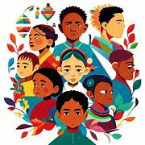
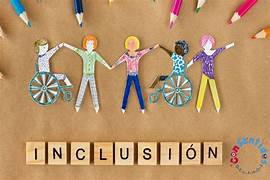
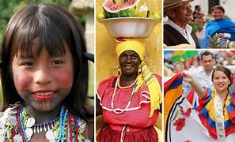
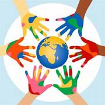

Introducción
La diversidad se refiere a la variedad de características culturales, sociales y personales que existen dentro de una comunidad. Es una condición natural de las sociedades humanas.
Reconocer la diversidad implica aceptar que las personas pueden tener diferentes formas de pensar, hablar, vestir, creer y vivir.
Tipos de Diversidad
La diversidad se manifiesta de múltiples formas dentro de una sociedad. Cada tipo de diversidad enriquece la vida comunitaria y aporta perspectivas únicas que contribuyen al desarrollo colectivo.
Reconocer y valorar estas diferencias es el primer paso hacia la construcción de sociedades más justas, inclusivas y equitativas para todos sus miembros.
- Diversidad cultural: Tradiciones y costumbres distintas.
- Diversidad lingüística: Diferentes idiomas y dialectos.
- Diversidad étnica: Diferentes orígenes y raíces culturales.
- Diversidad de género: Identidades y expresiones diversas.

Figura 1: Tipos de diversidad en la sociedad

Figura 2: Inclusión y respeto a la diversidad
Importancia de la Diversidad
La diversidad no es solo una realidad observable, sino un valor que debe ser promovido activamente. Las sociedades que respetan y celebran sus diferencias tienden a ser más creativas, resilientes y cohesionadas.
Ignorar o discriminar la diversidad genera desigualdad, exclusión y conflictos sociales que afectan el bienestar de toda la comunidad.
Dato importante
La diversidad promueve la inclusión, el respeto y la igualdad de oportunidades para todos los miembros de una sociedad.
Desarrollo del Tema
La diversidad es una realidad inherente a la condición humana. Desde que las primeras sociedades se formaron, los seres humanos han convivido con personas de distintos orígenes, lenguas, creencias y formas de vida. Aprender a valorar esta riqueza es fundamental para construir comunidades más justas.
Diversidad cultural y lingüística
La diversidad cultural se expresa a través de tradiciones, festividades, gastronomía, música y formas de organización social distintas entre los pueblos. La diversidad lingüística, por su parte, refleja la riqueza de las formas en que los seres humanos nos comunicamos. En México, por ejemplo, conviven el español con más de 60 lenguas indígenas, lo que representa un enorme patrimonio cultural que debe ser preservado y respetado.
Diversidad étnica y de género
La diversidad étnica reconoce que las personas tienen distintos orígenes históricos y raíces culturales que configuran su identidad. La diversidad de género, a su vez, abarca la variedad de identidades y expresiones con las que las personas se identifican. Respetar estas diferencias es una condición esencial para garantizar los derechos humanos y la dignidad de todas las personas.
Ejemplos Visuales

Ejemplo 1: Diversidad cultural

Ejemplo 2: Diversidad étnica
Ejemplo 3: Inclusión social
Conclusión
La diversidad es una riqueza que enriquece a las sociedades y amplía las posibilidades de desarrollo humano. Reconocerla, respetarla y valorarla es una responsabilidad compartida que nos permite construir comunidades más inclusivas y equitativas.
Promover la diversidad no significa ignorar las diferencias, sino celebrarlas como parte de lo que nos hace únicos y, al mismo tiempo, profundamente humanos.